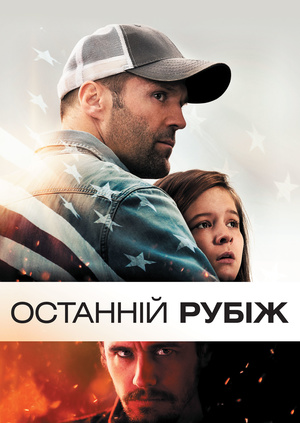
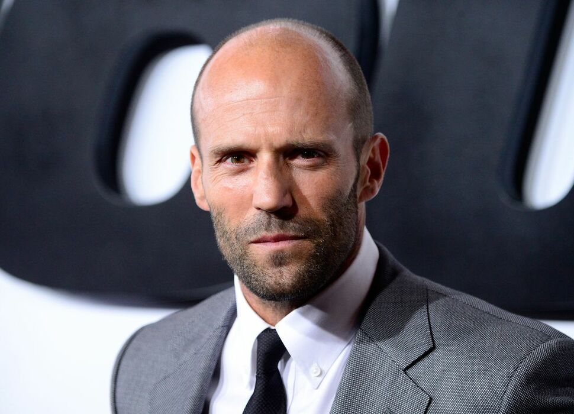
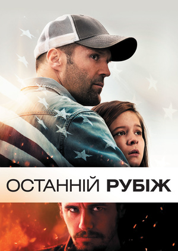

Перевізник 2

Останній рубіж
Механік 2

Джейсон Майкл Сте́йтем (часто помилково Стетхем, англ. Jason Michael Statham ; нар. 26 липня 1967, Лондон, Англія) — англійський актор, найбільше відомий за фільмами режисера Ґая Річі — «Карти, гроші та два стволи, що димлять», «Великий куш» і «Револьвер». Також знімався в головних ролях у декількох голлівудських та європейських блокбастерах «Перевізник», «Адреналін», «Війна», «Смертельні перегони», «Форсаж 8».
Джейсон Стейтем родился 26 июля 1967 года в Шайрбруке, графство Дербишир. Он был вторым сыном в семье лаунж-певца и портнихи, ставшей танцовщицей. Позже переехал в Грейт-Ярмут, графство Норфолк, и рос, следуя стопам своих родителей, овладевая искусством уличного театра. Он также играл в футбол в местной средней школе (1978-83), но его настоящей страстью были прыжки в воду. На протяжении 12 лет Стейтем входил в состав национальной сборной Великобритании по прыжкам в воду. В 1990 он приезжал в Россию для участия в турнире по прыжкам в воду «Весенние ласточки». В одном из интервью актёр отметил, что спорт был его хобби, а деньги приходилось зарабатывать, торгуя на улице парфюмерией и украшениями
Список фільмів
Перевізник 2
Останній рубіж
Механік 2